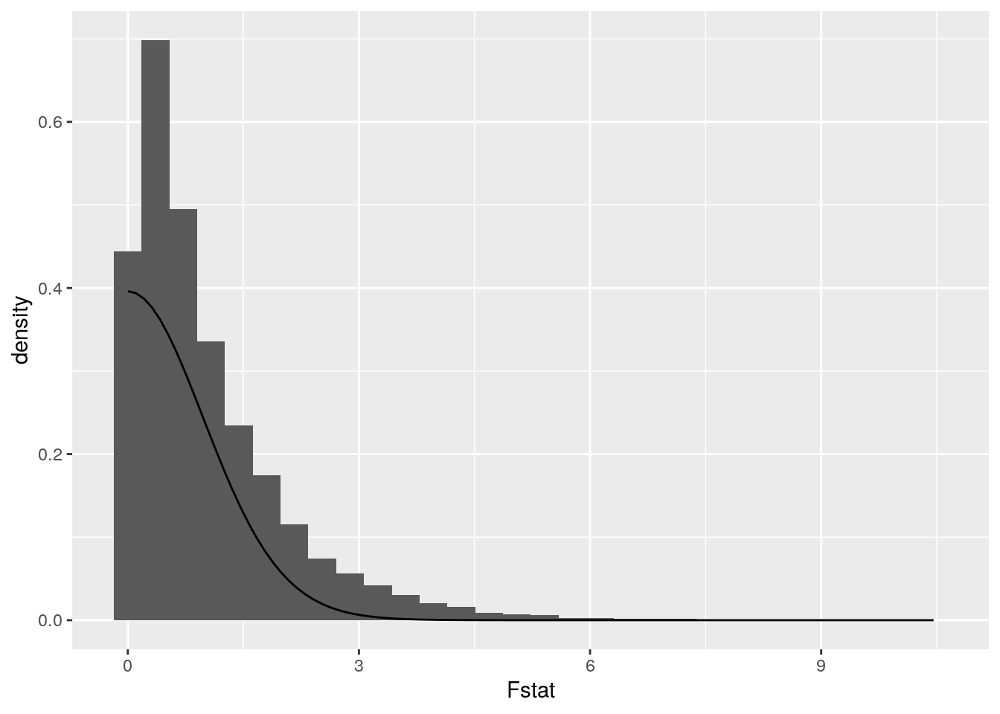
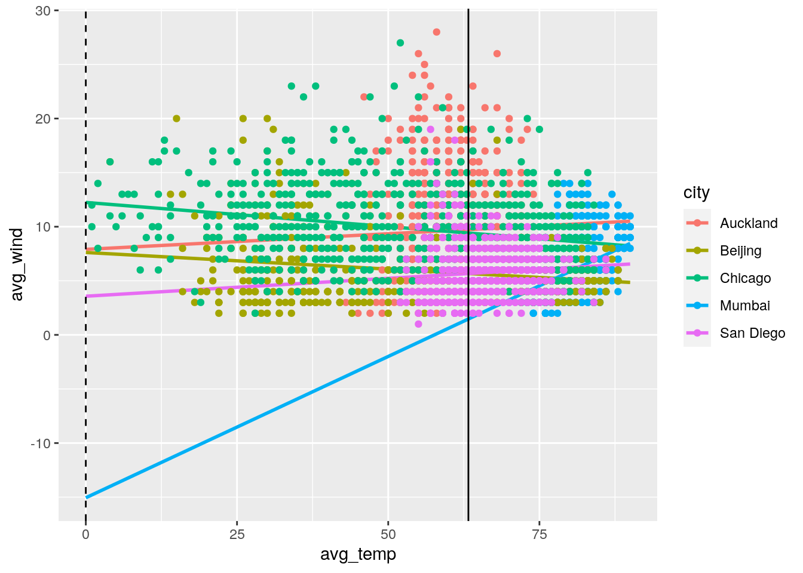
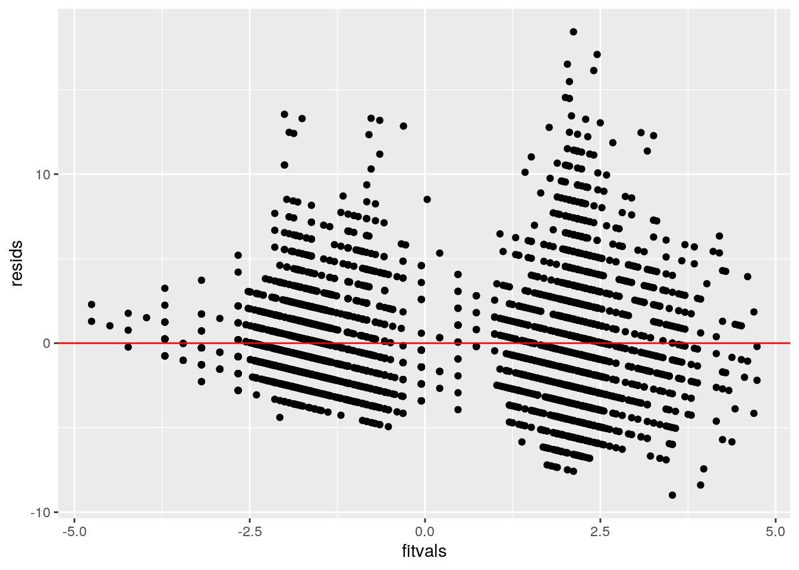
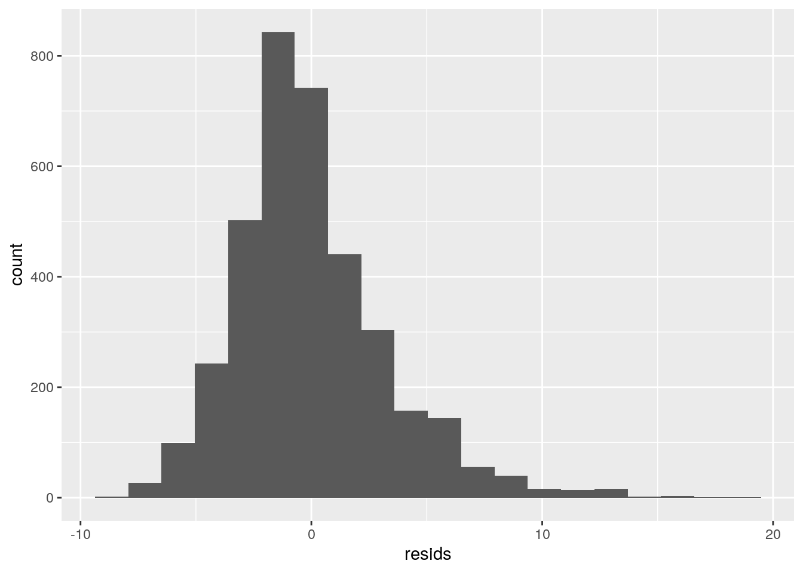
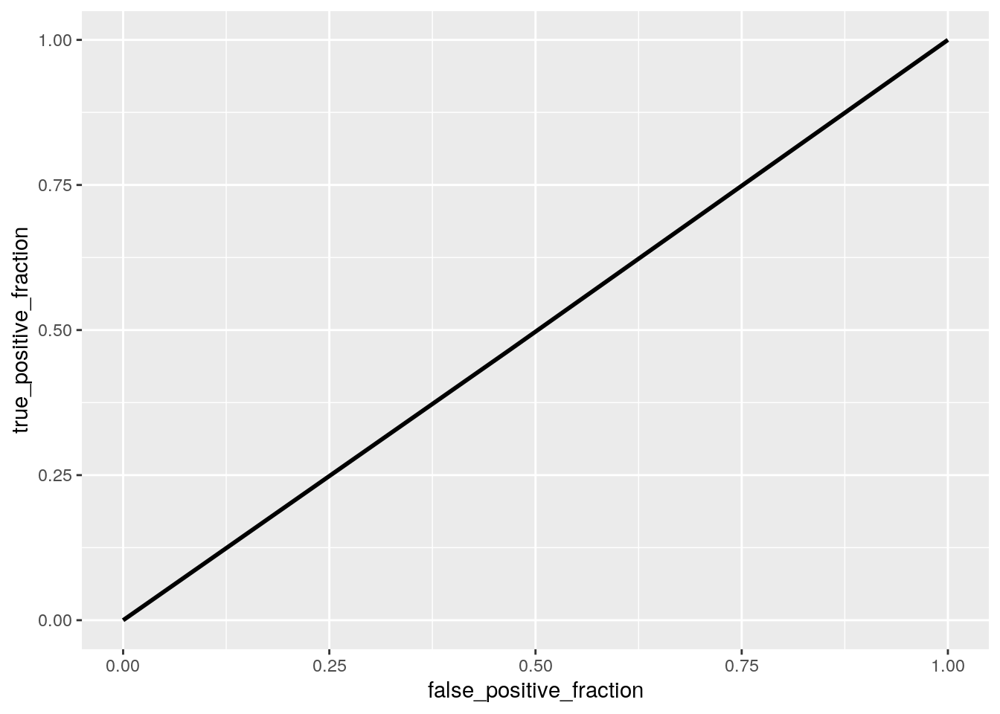
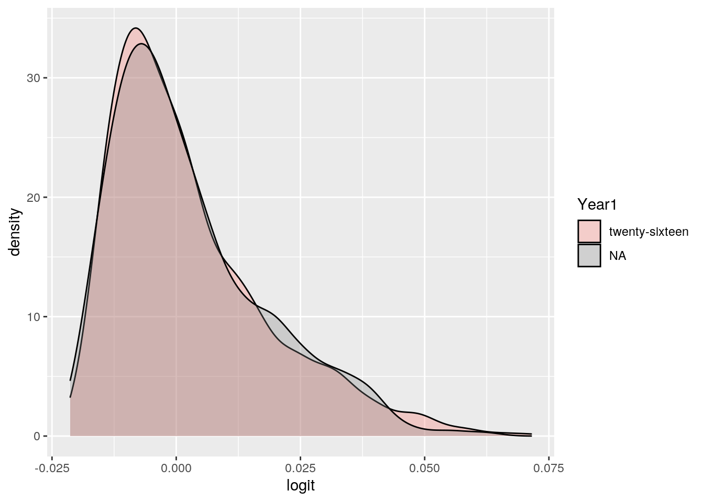
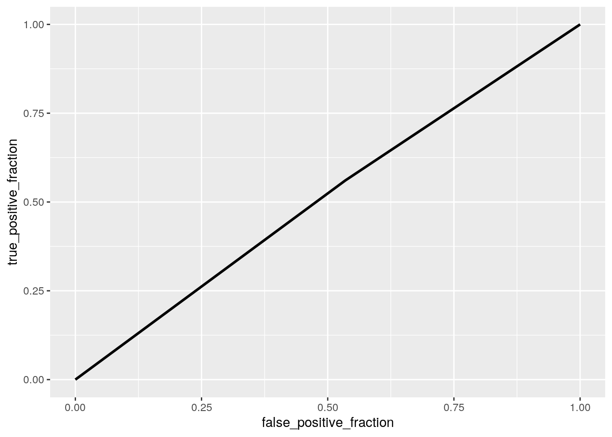

This is an R Markdown document. Markdown is a simple formatting syntax for authoring HTML, PDF, and MS Word documents. For more details on using R Markdown see http://rmarkdown.rstudio.com.
When you click the Knit button a document will be generated that includes both content as well as the output of any embedded R code chunks within the document. You can embed an R code chunk like this:
getwd()## [1] "/stor/home/aeq242/R/website/content/project"Weather <- read.csv("/stor/home/aeq242/Weather.csv")
Weather$year <- ifelse(Weather$year == '2016', 1, 0)
library(dplyr)##
## Attaching package: 'dplyr'## The following objects are masked from 'package:stats':
##
## filter, lag## The following objects are masked from 'package:base':
##
## intersect, setdiff, setequal, unionhead(Weather)## X city date year month day high_temp avg_temp low_temp high_dewpt
## 1 1 Auckland 2016-01-01 1 1 1 68 65 62 64
## 2 2 Auckland 2016-01-02 1 1 2 68 66 64 64
## 3 3 Auckland 2016-01-03 1 1 3 77 72 66 70
## 4 4 Auckland 2016-01-04 1 1 4 73 66 60 66
## 5 5 Auckland 2016-01-05 1 1 5 69 62 55 55
## 6 6 Auckland 2016-01-06 1 1 6 69 63 57 54
## avg_dewpt low_dewpt high_humidity avg_humidity low_humidity high_hg avg_hg
## 1 60 55 100 82 68 30.15 30.09
## 2 63 61 100 94 88 30.04 29.90
## 3 67 64 100 91 74 29.80 29.73
## 4 60 54 100 76 53 30.12 29.90
## 5 52 48 82 69 56 30.21 30.14
## 6 51 46 88 65 46 30.24 30.22
## low_hg high_vis avg_vis low_vis high_wind avg_wind low_wind precip events
## 1 30.01 6 6 4 21 15 28 0 Rain
## 2 29.80 6 5 1 33 21 46 0 Rain
## 3 29.68 6 6 1 18 12 NA 0 Rain
## 4 29.77 6 6 6 15 10 NA 0 Rain
## 5 30.09 6 6 6 13 7 NA 0 <NA>
## 6 30.18 6 6 6 17 8 28 0 <NA>Weather1<-Weather%>%select(city,month,avg_temp,avg_humidity,avg_wind,events,year)
WeatherManova<-manova(cbind(avg_humidity, avg_temp,avg_wind)~city, data=Weather1)
summary(WeatherManova)## Df Pillai approx F num Df den Df Pr(>F)
## city 4 0.77281 316.63 12 10950 < 2.2e-16 ***
## Residuals 3650
## ---
## Signif. codes: 0 '***' 0.001 '**' 0.01 '*' 0.05 '.' 0.1 ' ' 1summary.aov(WeatherManova)## Response avg_humidity :
## Df Sum Sq Mean Sq F value Pr(>F)
## city 4 276425 69106 327.13 < 2.2e-16 ***
## Residuals 3650 771066 211
## ---
## Signif. codes: 0 '***' 0.001 '**' 0.01 '*' 0.05 '.' 0.1 ' ' 1
##
## Response avg_temp :
## Df Sum Sq Mean Sq F value Pr(>F)
## city 4 367362 91840 516.64 < 2.2e-16 ***
## Residuals 3650 648847 178
## ---
## Signif. codes: 0 '***' 0.001 '**' 0.01 '*' 0.05 '.' 0.1 ' ' 1
##
## Response avg_wind :
## Df Sum Sq Mean Sq F value Pr(>F)
## city 4 13038 3259.4 286.35 < 2.2e-16 ***
## Residuals 3650 41547 11.4
## ---
## Signif. codes: 0 '***' 0.001 '**' 0.01 '*' 0.05 '.' 0.1 ' ' 1Weather1%>%group_by(city)%>%summarize(mean(avg_temp),mean(avg_humidity), mean(avg_wind))## `summarise()` ungrouping output (override with `.groups` argument)## # A tibble: 5 x 4
## city `mean(avg_temp)` `mean(avg_humidity)` `mean(avg_wind)`
## <fct> <dbl> <dbl> <dbl>
## 1 Auckland 60.6 80.4 9.66
## 2 Beijing 55.5 53.0 5.91
## 3 Chicago 52.7 67.4 9.89
## 4 Mumbai 80.9 66.4 6.09
## 5 San Diego 66.6 65.0 5.78pairwise.t.test(Weather1$avg_temp,Weather1$city, p.adj = "none")##
## Pairwise comparisons using t tests with pooled SD
##
## data: Weather1$avg_temp and Weather1$city
##
## Auckland Beijing Chicago Mumbai
## Beijing 2.4e-13 - - -
## Chicago < 2e-16 5.9e-05 - -
## Mumbai < 2e-16 < 2e-16 < 2e-16 -
## San Diego < 2e-16 < 2e-16 < 2e-16 < 2e-16
##
## P value adjustment method: nonepairwise.t.test(Weather1$avg_humidity, Weather1$city, p.adj = "none")##
## Pairwise comparisons using t tests with pooled SD
##
## data: Weather1$avg_humidity and Weather1$city
##
## Auckland Beijing Chicago Mumbai
## Beijing <2e-16 - - -
## Chicago <2e-16 <2e-16 - -
## Mumbai <2e-16 <2e-16 0.1738 -
## San Diego <2e-16 <2e-16 0.0015 0.0681
##
## P value adjustment method: nonepairwise.t.test(Weather1$avg_wind, Weather1$city, p.adj = "none")##
## Pairwise comparisons using t tests with pooled SD
##
## data: Weather1$avg_wind and Weather1$city
##
## Auckland Beijing Chicago Mumbai
## Beijing <2e-16 - - -
## Chicago 0.190 <2e-16 - -
## Mumbai <2e-16 0.314 <2e-16 -
## San Diego <2e-16 0.443 <2e-16 0.076
##
## P value adjustment method: none0.05/34## [1] 0.001470588By conducting a one-way MANOVA test, we can see the different weather patterns and their effects in each city by using the variables : avg_humidity, avg_temp, and avg_wind. Running the MANOVA test, we can assume that the variables are dependent, have a multivariate normality, have an equal covariance, no outlier's, and are not too correlated. We found significant differences in our values where the Pillai trace = .77281, pseudo F(12, 10950) = 316.63, and p < 0.0001. We then ran a univariate ANOVA, where all 3 variables turned out to be significant, and used the Bonferroni method to control for type-I error rates, coming out to be 0.001470588. Majority of the post-hoc t tests showed significant differences, avg_temp was completely significantly different, while avg_humidity and avg_wind had values greater than 0.05.
library(ggplot2)
library(tidyr)
Fstat<-vector()
for(i in 1:10000){
g1<-rnorm(36)
g2<-rnorm(36)
g3<-rnorm(36)
SSW<- sum((g1-mean(g1))^2+(g2-mean(g2))^2+(g3-mean(g3))^2)
SSB<- 36*sum( (mean(c(g1,g2,g3))-c(mean(g1),mean(g2),mean(g3)))^2 )
Fstat[i]<- (SSB/2)/(SSW/105)
}
data.frame(Fstat) %>% ggplot(aes(Fstat)) + geom_histogram(aes(y=..density..))+
stat_function(fun=dt,args=list(df=35),geom="line")## `stat_bin()` using `bins = 30`. Pick better value with `binwidth`.
summary(aov(avg_wind~avg_humidity,data=Weather1))## Df Sum Sq Mean Sq F value Pr(>F)
## avg_humidity 1 860 860.4 58.5 2.58e-14 ***
## Residuals 3653 53725 14.7
## ---
## Signif. codes: 0 '***' 0.001 '**' 0.01 '*' 0.05 '.' 0.1 ' ' 1The null hypothesis states that the avg_wind of the city does not differ based on the avg_humidity of the city. Alternative hypothesis, the avg_wind does differ based on the avg_humidity. Based on the p-value we obtained in the randomization test, we can reject the null hypothesis since our p-value is 2.58e-14, less than 0.05. This would mean the humidity of the city affects the average wind.
Weather1$avg_temp_c <- Weather1$avg_temp - mean(Weather1$avg_temp)
Weather1$avg_wind_c <- Weather$avg_wind - mean(Weather1$avg_wind)
fit<-lm(avg_wind_c ~ city*avg_temp_c, data=Weather1)
summary(fit)##
## Call:
## lm(formula = avg_wind_c ~ city * avg_temp_c, data = Weather1)
##
## Residuals:
## Min 1Q Median 3Q Max
## -8.9912 -2.0289 -0.4928 1.4768 18.4190
##
## Coefficients:
## Estimate Std. Error t value Pr(>|t|)
## (Intercept) 2.268880 0.131728 17.224 < 2e-16 ***
## cityBeijing -4.060755 0.185653 -21.873 < 2e-16 ***
## cityChicago -0.317646 0.191548 -1.658 0.097341 .
## cityMumbai -8.263431 0.548920 -15.054 < 2e-16 ***
## citySan Diego -4.066275 0.191905 -21.189 < 2e-16 ***
## avg_temp_c 0.028905 0.018642 1.550 0.121113
## cityBeijing:avg_temp_c -0.059667 0.019588 -3.046 0.002336 **
## cityChicago:avg_temp_c -0.073607 0.019671 -3.742 0.000186 ***
## cityMumbai:avg_temp_c 0.232354 0.034757 6.685 2.66e-11 ***
## citySan Diego:avg_temp_c 0.004175 0.027672 0.151 0.880075
## ---
## Signif. codes: 0 '***' 0.001 '**' 0.01 '*' 0.05 '.' 0.1 ' ' 1
##
## Residual standard error: 3.304 on 3645 degrees of freedom
## Multiple R-squared: 0.2711, Adjusted R-squared: 0.2693
## F-statistic: 150.6 on 9 and 3645 DF, p-value: < 2.2e-16ggplot(Weather1, aes(avg_temp,avg_wind, color = city)) + geom_smooth(method = "lm", se = F, fullrange = T) +
geom_point()+geom_vline(xintercept=0,lty=2)+geom_vline(xintercept=mean(Weather1$avg_temp))## `geom_smooth()` using formula 'y ~ x'
resids<-fit$residuals
fitvals<-fit$fitted.values
ggplot()+geom_point(aes(fitvals,resids))+geom_hline(yintercept=0, color='red') 
ggplot()+geom_histogram(aes(resids), bins=20)
shapiro.test(resids)##
## Shapiro-Wilk normality test
##
## data: resids
## W = 0.94745, p-value < 2.2e-16library(sandwich)
library(lmtest)## Loading required package: zoo##
## Attaching package: 'zoo'## The following objects are masked from 'package:base':
##
## as.Date, as.Date.numericbptest(fit)##
## studentized Breusch-Pagan test
##
## data: fit
## BP = 412.28, df = 9, p-value < 2.2e-16summary(fit)$coef[,1:2]## Estimate Std. Error
## (Intercept) 2.268879913 0.13172762
## cityBeijing -4.060754783 0.18565272
## cityChicago -0.317646197 0.19154827
## cityMumbai -8.263431259 0.54891986
## citySan Diego -4.066275443 0.19190464
## avg_temp_c 0.028904612 0.01864236
## cityBeijing:avg_temp_c -0.059666620 0.01958849
## cityChicago:avg_temp_c -0.073606617 0.01967135
## cityMumbai:avg_temp_c 0.232353785 0.03475704
## citySan Diego:avg_temp_c 0.004175303 0.02767220coeftest(fit, vcov = vcovHC(fit))[,1:2]## Estimate Std. Error
## (Intercept) 2.268879913 0.17605125
## cityBeijing -4.060754783 0.19612811
## cityChicago -0.317646197 0.22667886
## cityMumbai -8.263431259 0.32839219
## citySan Diego -4.066275443 0.21150562
## avg_temp_c 0.028904612 0.02668576
## cityBeijing:avg_temp_c -0.059666620 0.02731509
## cityChicago:avg_temp_c -0.073606617 0.02741574
## cityMumbai:avg_temp_c 0.232353785 0.03105038
## citySan Diego:avg_temp_c 0.004175303 0.03086240summary(fit)##
## Call:
## lm(formula = avg_wind_c ~ city * avg_temp_c, data = Weather1)
##
## Residuals:
## Min 1Q Median 3Q Max
## -8.9912 -2.0289 -0.4928 1.4768 18.4190
##
## Coefficients:
## Estimate Std. Error t value Pr(>|t|)
## (Intercept) 2.268880 0.131728 17.224 < 2e-16 ***
## cityBeijing -4.060755 0.185653 -21.873 < 2e-16 ***
## cityChicago -0.317646 0.191548 -1.658 0.097341 .
## cityMumbai -8.263431 0.548920 -15.054 < 2e-16 ***
## citySan Diego -4.066275 0.191905 -21.189 < 2e-16 ***
## avg_temp_c 0.028905 0.018642 1.550 0.121113
## cityBeijing:avg_temp_c -0.059667 0.019588 -3.046 0.002336 **
## cityChicago:avg_temp_c -0.073607 0.019671 -3.742 0.000186 ***
## cityMumbai:avg_temp_c 0.232354 0.034757 6.685 2.66e-11 ***
## citySan Diego:avg_temp_c 0.004175 0.027672 0.151 0.880075
## ---
## Signif. codes: 0 '***' 0.001 '**' 0.01 '*' 0.05 '.' 0.1 ' ' 1
##
## Residual standard error: 3.304 on 3645 degrees of freedom
## Multiple R-squared: 0.2711, Adjusted R-squared: 0.2693
## F-statistic: 150.6 on 9 and 3645 DF, p-value: < 2.2e-16The intercept of 2.268880 is the avg_wind centered for Auckland with average temperatures. Beijing, Chicago, Mumbai, and San Diego all have lower predicted average winds of 4.060755, 0.317646,8.263431, and 4.066275 respectively. This is lower than Auckland with average temperatures. For every one unit increase in average temperature, predicted average wind increases by 0.028905mph for the city of Auckland. The slope of the average temperature on the average wind of Beijing and Chicago is 0.059667 and 0.073607, respectively,lower than for Auckland. In comparison the slope of the average temperature on the average wind of Mumbai and San Diego is 0.232354 and 0.004175, respectively, higher than for Auckland.
Testing for homoskedasticity, linearity, and normality we can see in our ggplots that it fails for homoskedasticity and linearity because of the uneven distribution tending towards either the left or the right. The dataset for Weather1 also does not pass the normality test due to having a p-value of 2.2e-16, based on the Shapiro-Wilk normality test, and outliers as we can see in our histogram.
Next, we conducted the BP test which resulted in our p-value to be significant, rejecting the null hypothesis for homoskedasticity. Then, by running the robust standard errors our uncorrected SE and corrected SE show variation from one another which further proves how our dataset homoskedasticity.
Lastly, 0.2711 of the variation in the outcome is explained by our model. (we obtained this by running summary(fit))
samps<-replicate(5000, {
boots <- sample_frac(Weather1, replace=T)
fits <- lm(avg_wind_c ~ avg_temp_c*city, data=boots)
coef(fits)
})
samps %>% t %>% as.data.frame %>% summarize_all(sd)## (Intercept) avg_temp_c cityBeijing cityChicago cityMumbai citySan Diego
## 1 0.1765518 0.02649109 0.1976302 0.2290005 0.331805 0.2135352
## avg_temp_c:cityBeijing avg_temp_c:cityChicago avg_temp_c:cityMumbai
## 1 0.02708667 0.0273139 0.03118497
## avg_temp_c:citySan Diego
## 1 0.03043902When comparing the bootstrapped standard error to the corrected robust standard error, we can see that they are very similar and hardly differ from one another. There is still some variation, though, with the bootstrap being a little higher than the robust standard error.
fit2<-glm(year~avg_temp_c+avg_wind_c, data=Weather1, family="binomial")
coeftest(fit2)##
## z test of coefficients:
##
## Estimate Std. Error z value Pr(>|z|)
## (Intercept) 0.00273651 0.03308264 0.0827 0.9341
## avg_temp_c -0.00043354 0.00203542 -0.2130 0.8313
## avg_wind_c 0.00323521 0.00878291 0.3684 0.7126exp(coef(fit2))## (Intercept) avg_temp_c avg_wind_c
## 1.0027403 0.9995666 1.00324051- 0.9995666 ## [1] 0.0004334prob<-predict(fit2,type="response")
pred<-ifelse(prob>.5,1,0)
table(truth=Weather1$year, prediction=pred)%>%addmargins## prediction
## truth 0 1 Sum
## 0 972 853 1825
## 1 980 850 1830
## Sum 1952 1703 3655(972+850)/3655## [1] 0.4984952850/1830## [1] 0.4644809972/1825## [1] 0.5326027850/1703## [1] 0.4991192library(plotROC)
ROCplot<-ggplot(Weather1)+geom_roc(aes(d=year,m=pred), n.cuts=0)
ROCplot
calc_auc(ROCplot)## PANEL group AUC
## 1 1 -1 0.4985418Weather1$logit<-predict(fit2)
Weather1 <- Weather1%>%mutate(Year1 = recode(year,"twenty-sixteen","twenty-seventeen"))
ggplot(Weather1,aes(x = logit, fill=Year1))+geom_density(alpha=.3)
Odds of the year being 2016 decreases by 0.0004334 for every additional degree for temperature. Odds of the year being 2016 increases by 0.0032405 for every additional unit of mph for average wind. Next we generated a confusion matrix and calculated the accuracy to be 0.4984952. This means that about 49.85% of our matrix correctly classified the year. For the sensitivity, the proportion of correctly classifying observations in 2016 was 0.4644809. Then, for the specificity, the proportion of correctly classified observations in 2017 was 0.5326027. For precision, the proportion of predicted 2016 observations that were correct is 0.4991192.We calculated the AUC by generating an ROC plot which illustrated an AUC value of 0.4985418. The AUC value is considered a bad trade-off between sensitivity and specificity.
In our ggplot comparing density to the log-odds, we are comparing 2016 and 2017. Because my binary column was considered numerical, I re-coded it into a categorical column which allowed me to run the ggplot. However, due to me creating this binary column in the beginning, I assigned 2016 to the binary value of 1 while 2017 was automatically changed to 0, thus making the new column represent 2017 as NA. From the density plot, we can see significant overlap between the two years, making the chance prediction FPR=TPR. This makes sense since our AUC value was close to 0.5.
fit3<-glm(year~avg_humidity+month+city+avg_wind+avg_temp, data=Weather1, family="binomial")
prob1<-predict(fit3,type="response")
pred1<-ifelse(prob1>.5,1,0)
table(truth=Weather1$year, prediction=pred1)%>%addmargins## prediction
## truth 0 1 Sum
## 0 849 976 1825
## 1 804 1026 1830
## Sum 1653 2002 3655ROCplot2<-ggplot(Weather1)+geom_roc(aes(d=year,m=pred1), n.cuts=0)
ROCplot2
calc_auc(ROCplot2)## PANEL group AUC
## 1 1 -1 0.5129306(849+1026)/3655## [1] 0.51299591026/1830## [1] 0.5606557849/1825## [1] 0.46520551026/2002## [1] 0.5124875class_diag <- function(probs,truth){
tab<-table(factor(probs>.5,levels=c("FALSE","TRUE")),truth)
acc=sum(diag(tab))/sum(tab)
sens=tab[2,2]/colSums(tab)[2]
spec=tab[1,1]/colSums(tab)[1]
ppv=tab[2,2]/rowSums(tab)[2]
f1=2*(sens*ppv)/(sens+ppv)
if(is.numeric(truth)==FALSE & is.logical(truth)==FALSE) truth<-as.numeric(truth)-1
ord<-order(probs, decreasing=TRUE)
probs <- probs[ord]; truth <- truth[ord]
TPR=cumsum(truth)/max(1,sum(truth))
FPR=cumsum(!truth)/max(1,sum(!truth))
dup<-c(probs[-1]>=probs[-length(probs)], FALSE)
TPR<-c(0,TPR[!dup],1); FPR<-c(0,FPR[!dup],1)
n <- length(TPR)
auc<- sum( ((TPR[-1]+TPR[-n])/2) * (FPR[-1]-FPR[-n]) )
data.frame(acc,sens,spec,ppv,f1,auc)
}
set.seed(1234)
k=10
data<-Weather1[sample(nrow(Weather1)),]
folds<-cut(seq(1:nrow(Weather1)),breaks=k,labels=F)
diags<-NULL
for(i in 1:k){
train<-data[folds!=i,]
test<-data[folds==i,]
truth<-test$year
fit4<-glm(year~avg_humidity+month+city+avg_wind+avg_temp,data=train,family="binomial")
probs<-predict(fit4,newdata = test,type="response")
diags<-rbind(diags,class_diag(probs,truth))
}
summarise_all(diags,mean)## acc sens spec ppv f1 auc
## 1 0.484537 0.531025 0.4446892 0.4885607 0.5042221 0.4822507library(glmnet)## Loading required package: Matrix##
## Attaching package: 'Matrix'## The following objects are masked from 'package:tidyr':
##
## expand, pack, unpack## Loaded glmnet 4.0-2dataasett <- Weather1 %>% select(-avg_temp_c,-avg_wind_c,-logit,-Year1,-events)
y<-as.matrix(dataasett$year)
x<-model.matrix(year~.,data=dataasett)[,-1]
cv<-cv.glmnet(x,y,family="binomial")
lasso<-glmnet(x,y,family="binomial",lambda=cv$lambda.1se)
coef(lasso)## 9 x 1 sparse Matrix of class "dgCMatrix"
## s0
## (Intercept) 0.00273598
## cityBeijing 0.00000000
## cityChicago .
## cityMumbai .
## citySan Diego .
## month .
## avg_temp .
## avg_humidity .
## avg_wind .set.seed(1234)
k=10
data1 <- dataasett %>% sample_frac
folds1 <- ntile(1:nrow(dataasett),n=10)
diags1<-NULL
for(i in 1:k){
train1 <- data1[folds1!=i,]
test1 <- data1[folds1==i,]
truth1 <- test1$year
fit7 <- glm(year~city,
data=train1, family="binomial")
probsss <- predict(fit7, newdata=test1, type="response")
diags1<-rbind(diags,class_diag(probsss,truth1))
}
diags1%>%summarize_all(mean)## acc sens spec ppv f1 auc
## 1 0.481335 0.5572743 0.4150966 0.4853621 0.5114611 0.4793443When running our second confusion matrix, we calculated for accuracy which resulted in being 0.5129959. This would mean we correctly classified 51.3% of the total cases. For the sensitivity, the proportion of correctly classifying observations in 2016 was 0.5606557. Then, for the specificity, the proportion of correctly classified observations in 2017 was 0.4652055. For precision, the proportion of predicted 2016 observations that were correct was 0.5124875. Thus, our AUC value was 0.5129306, The AUC value is considered a bad trade-off between sensitivity and specificity but slightly better than our previous AUC.
For the CV with k=10, we ran our same model and our values did change for our classification diagnostic. The accuracy, specificity, sensitivity, and precision and AUC were all lower than the original values. The AUC is still considered a very bad trade-off between sensitivity and specificity.
For our LASSO model, the only variable retained was the city of Beijing. Though, I did get the value of lambda to be 0.0000 which would be interpreted as Beijing being the most important predictor with no penalty/no regularization.
Comparing the classification diagnostic in LASSO to the CV model, not much has changed. The AUC is still considered a very bad trade-off between sensitivity and specificity of 0.4793443 rather than the 0.4822507 we computed with the CV model. When comparing Acc, Sens, Spec, and PPV, the values change only slightly, either lower or higher for both the in-sample and the out-sample tests.